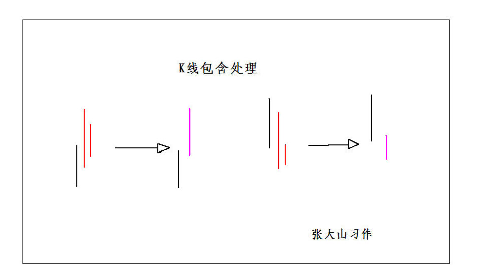
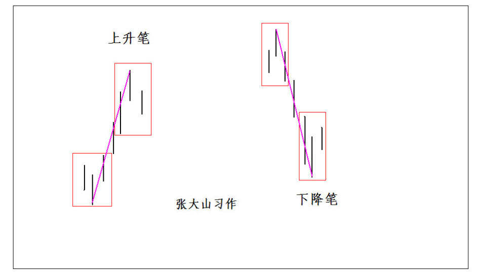
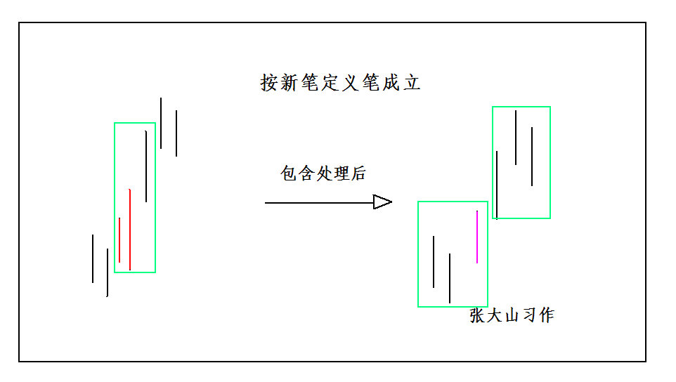
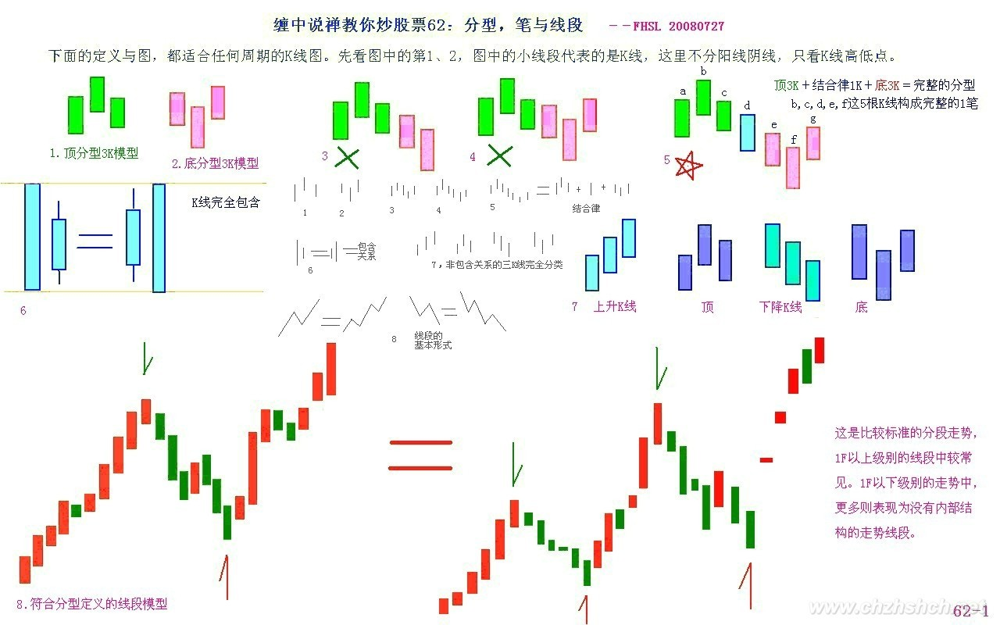
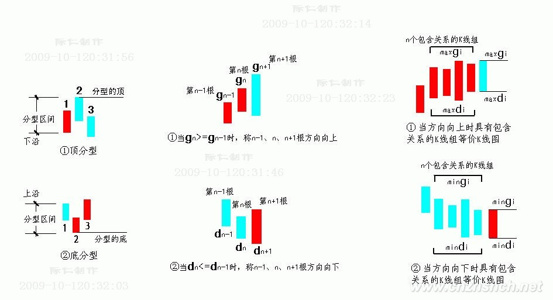

|
 |
教你炒股票62：分型、笔与线段
(2007-06-30 09:49:51)
在宾馆里闲着等着10点开始的腐败，半个小时，找个面首来面首有点时间紧张，还不如给各位写个主贴，来个课程，耗费一下各位周末腐败的时间。
瞧了一下，有位叫石猴的网友写了帖子来解释什么是线段，他的理解还行，但不够严密。其实，本ID的线段是可以最精确定义的，本ID的理论，本质上是一套几何理论，其有效性就如同几何一般，本ID理论当然有失败不严谨的时候，但这前提是几何的基础失败不严谨，不明白这一点，就不明白本ID的理论。这里，就把本来是后面的课程提前说说。
下面的定义与图，都适合任何周期的K线图。先看图中的第1、2，图中的小线段代表的是K线，这里不分阳线阴线，只看K线高低点。
像图1这种，第二K线高点是相邻三K线高点中最高的，而低点也是相邻三K线低点中最高的，本ID给一个定义叫顶分型；图2这种叫底分型，第二K线低点是相邻三K线低点中最低的，而高点也是相邻三K线高点中最低的。看不明白定义的，看图就明白了，这么直观都不明白，那去和孔男人为伍吧。
顶分型的最高点叫该分型的顶，底分型的最低点叫该分型的底，由于顶分型的底和底分型的顶是没有意义的，所以顶分型的顶和底分型的底就可以简称为顶和低。也就是说，当我们以后说顶和底时，就分别是说顶分型的顶和底分型的底。
两个相邻的顶和底之间构成一笔，所谓笔，就是顶和底之间的其他波动，都可以忽略不算，但注意，一定是相邻的顶和底，隔了几个就不是了。而所谓的线段，就是至少由三笔组成。但这里有一个细微的地方要分清楚，因为结合律是必须遵守的，像图3这种，顶和底之间必须共用一个K线，这就违反结合律了，所以这不算一笔，而图4，就光是顶和底了，中间没有其他K线，一般来说，也最好不算一笔，而图5，是一笔的最基本的图形，顶和底之间还有一根K线。在实际分析中，都必须要求顶和底之间都至少有一K线当成一笔的最基本要求。
当然，实际图形里，有些复杂的关系会出现，就是相邻两K线可以出现如图6这种包含关系，也就是一K线的高低点全在另一K线的范围里，这种情况下，可以这样处理，在向上时，把两K线的最高点当高点，而两K线低点中的较高者当成低点，这样就把两K线合并成一新的K线；反之，当向下时，把两K线的最低点当低点，而两K线高点中的较低者当成高点，这样就把两K线合并成一新的K线。经过这样的处理，所有K线图都可以处理成没有包含关系的图形。
而图7，就给出了经过以上处理，没有包含关系的图形中，三相邻K线之间可能组合的一个完全分类，其中的二、四，就是分别是顶分型和底分型，一可以叫上升K线，三可以叫下降K线。所以，上升的一笔，由结合律，就一定是底分型+上升K线+顶分型；下降的一笔，就是顶分型+下降K线+底分型。注意，这里的上升、下降K线，不一定都是3根，可以无数根，只要一直保持这定义就可以。当然，简单的，也可以是1、2根，这只要不违反结合律和定义就可以。
至于图8，就是线段的最基本形态，而图9，就是线段破坏，也就是两线段组合的其中一种形态。有人可能要说，这怎么有点像波浪理论，这有什么奇怪的，本ID的理论可以严格地推论出波浪理论的所有结论，而且还可以指出他理论的所有不足，波浪理论和本ID的理论一点可比性都没有。不仅是波浪理论，所有关于股市的理论，只要是关系到图形的，本ID的理论都可以严格推论，因为本ID的理论是关于走势图形最基础的理论，谁都逃不掉。
===============================================
1、K线顶分型、底分型：（附课文学习用图）
“第二K线高点是相邻三K线高点中最高的，而低点也是相邻三K线低点中最高的，本ID给一个定义叫顶分型”；“底分型，第二K线低点是相邻三K线低点中最低的，而高点也是相邻三K线高点中最低的”。
2、顶分型的最高点叫该分型的顶，底分型的最低点叫该分型的底。顶分型的顶和底分型的底就可以简称为顶和低。也就是说，当我们以后说顶和底时，就分别是说顶分型的顶和底分型的底。
3、笔：两个相邻的顶和底之间构成一笔，所谓笔，就是顶和底之间的其他波动，都可以忽略不算，但注意，一定是相邻的顶和底，隔了几个就不是了。一笔的最基本的图形，顶和底之间还有一根K线。在实际分析中，都必须要求顶和底之间都至少有一K线当成一笔的最基本要求。
4、新笔定义：本ID想了想，计算了一下能量力度，觉得以后可以把笔的成立条件略微放松一下，就是一笔必须满足以下两个条件：1、顶分型与底分型经过包含处理后，不允许共用K线，也就是不能有一K线分别属于顶分型与底分型，这条件和原来是一样的，这一点绝对不能放松，因为这样，才能保证足够的能量力度；2、在满足1的前提下，顶分型中最高K线和底分型的最低K线之间（不包括这两K线），不考虑包含关系，至少有3根（包括3根）以上K线。显然，第二个条件，比原来分型间必须有独立K线的一条，要稍微放松了一点，这样，象今天绿箭头所指的地方，就是一笔了，相应那三笔下来就构成一段了，整个划分就不会出现比较古怪的线段。
5、上升K线、下降K线：
K线的顶点和底点越来高的几根K线称上升K线。一般第二根K线的高点比第一根的K线的顶点高，就视为上升K线。
K线的顶点和底点越来低的几根K线称下降K线。一般第二根K线的低点比第一根的K线的低点低，就视为下降K线。
6、包含处理：实际图形里，有些复杂的关系会出现，就是相邻两K线可以出现如图6这种包含关系，也就是一K线的高低点全在另一K线的范围里，这种情况下，可以这样处理，在向上时，把两K线的最高点当高点，而两K线低点中的较高者当成低点，这样就把两K线合并成一新的K线；反之，当向下时，把两K线的最低点当低点，而两K线高点中的较低者当成高点，这样就把两K线合并成一新的K线。

7、笔的基本形态：

8、新笔定义与老笔定义的细微差别：
 9、不能成立的笔：

 周末，用股票长沙各位一把
(2007-06-23 16:15:21)
长沙，一个正被一群女性化幼男折腾着的城市，到处散发着腐烂的气息。本ID虽然喜欢腐败，但对女性化幼男的腐烂没兴趣。企图以贩卖中性男女糜烂中国的长沙，最近还有一个娱乐，就是关于所谓中国地王的。相比之下，曾剃头已经算是忒可爱了。
中午刚腐败结束，晚上接着来，接着的一周转战N省，腐败到底。有点空闲，学着画了两图，周末音乐会开不了，就用股票长沙各位一把。图一里的图形都是等价的，都是一线段；图二里，区分了一些容易混淆的。随手画的，各位凑合看吧。
长沙，最大的好处，就是没有任何419的诱惑，至少按照本ID的审美标准，这里是最安全的城市了。在这里还要度过两个安全的、没有诱惑的夜晚。那些没有诱惑的街道，如同卖点过后的下降通道。今晚，湘江上是否有一叶扁舟，浮着轻凉的月光，让本ID去私人股权投资一把？
必须和企图捣毁共和国基础的舆论进行坚决斗争
(2007-07-01 12:06:06)
本ID眼里揉不进沙子，汉奸配合美国人对中国的颠覆是全方位的，趁着午饭前的十分钟，必须写几句。
最近，有人开始有计划地去反思所谓土改的旧帐，说什么分地即全体犯罪、土改是忽悠农民造反、地主其实都是老好人，诸如此类。任何人要摧毁一个国家，最简单就是从其历史下手，美国这面首的历史，从来都是最肮脏的，但谁在粉饰？历史本来就是铁和血，用某种绝对的道德标准来摧毁历史，就是这些人的一贯伎俩。但历史从来不是道德的，历史无法摧毁，所有对历史的谈论、摧毁，都不过为了现实的利益服务。
新中国当然要砸破一切旧的法律，这有什么可说的？企图用旧中国法律来规定新中国的行为，无聊且可笑。农民，把一切现存的当成天经地义的，就是要忽悠他们，告诉他们没有任何现存是天经地义的，一切生产关系，都是要被历史所打破的。地主，被个体的消灭，无须什么矫柔造作的眼泪，历史就是这样，历史就是铁和血。
被忽悠的，都是能被忽悠的。历史的真理就是：被忽悠的都是能被忽悠的。谁有本事，现在忽悠大家重新回到原始社会吧，看能还是不能？历史的另一条真理就是：对待忽悠，可以用忽悠对待，也可以用枪杆子对待，而且历史最终都在证明着，不懂得枪杆子，放弃枪杆子的，不是别有用心，就是天字一号的大傻蛋。
好了，十分钟快到了，先下，再见。
|
|
|
|